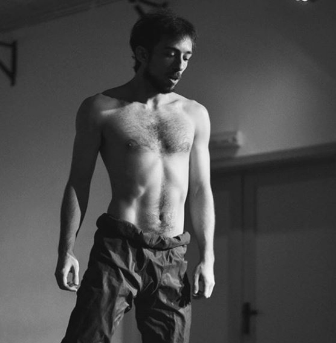
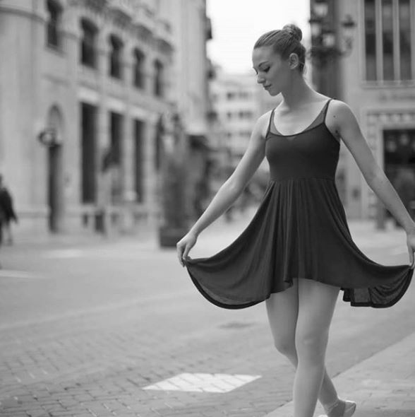

Random Happiness Productions es una joven compañía creada en 2018 por un conjunto de jóvenes actores: Ania Hernández y Chemi Hitos, con formación en teatro físico y textual en la Real Escuela Superior de Arte Dramático.
Trabaja desde sus conocimientos fundamentales del teatro del movimiento, creando una comunión de cuerpo y texto en el actor, con el objetivo de alcanzar un discurso propio y una forma particular de hacer teatro.
Esta compañía nace de las inquietudes y necesidades de unos actores de transmitir y expresar a través de sus propios textos, una forma de entender el mundo y el teatro.
CHEMI HITOS
Actor, director, dramaturgo y productor de 'La probabilidad de lo imposible', y uno de los miembros fundadores de la compañía.
Estudiante de Interpretación Gestual en la Real Escuela Superior de arte dramático, completa su formación con cursos de lucha escénica, interpretación ante la cámara y formaciones especializadas, la última de ellas, un taller de técnica Decroux de mimo con expertos como Thomas Lebhart.
Ha trabajado en cortometrajes y publicidad, y en varias obras de teatro producidas en la RESAD. Su último trabajo como actor profesional fue con la compañía Malala Producciones en un obra de teatro-danza, NoLugar, dirigida por Tomás Cabané.
ANIA HERNÁNDEZ
Actriz y bailarina formada en teatro, primero por la Escuela Superior de Arte Dramático de Valencia y después en la Real Escuela Superior de Arte Dramático de Madrid.
Completa su formación con habilidades en danza: Ballet Clásico, por la Royal Academy of Dance, esgrima escénica, interpretación ante la cámara y canto, siendo solista y coro del grupo a capella “The Chevrolettes”.
Ha trabajado en cortometrajes, webseries, publicidad, videoclips y largometrajes. Su experiencia teatral comienza en el 2010, siendo ininterrupida hasta 2018 con diversas participaciones en producciones de teatro y microteatro tanto en Valencia como Madrid.
Colaboradores:
MARCOS OLIVARES
Marcos Olivares, formado en escenografía, vestuario e iluminación en la Escuela Superior de Arte Dramático de Madrid.
También se ha formado como intérprete en la escuela -laboratorio de creación 'La Usina' en Madrid, y como bailarín la trayectoria le viene de muy pequeño no dejando nunca de formarse en distintos estilos (regionales, salón, contemporáneo, clásico y funky)
Tiene una amplia experiencia en diferentes trabajos como escenógrafo, vestuarista e iluminador. Con #NoLugar de Tomás Cabané recibe el premio honorífico a mejor técnico iluminador en el festival 'MUTIS' de Barcelona.
Dirección web personal:
www.marcosolivares.wixsite.com/mogz
JAVIER SÁNCHEZ
Javier Sánchez es el diseñador web y community manager de la compañia. Formado en desarrollo de páginas web y diseño gráfico en Granada.
MARTA RUIZ
Marta Ruiz, licenciada en traducción e interpretación por la Universidad de Granada, ha realizado la traducción y subtitulación del cortometraje de 'La probabilidad de lo imposible' y también la traducción del texto de la obra teatral.
JACK AVISON
Jack Avison es un músico escocés compositor de la banda sonora original de 'La probabilidad de lo imposible'.
Página oficial de Facebook:
www.facebook.com/jackavisonmusic/
Canal oficial de Youtube:
https://www.youtube.com/channel/JackAvisonMusic
TARO TRUP
Taro Trup es actor especializado en teatro físico por la Real Escuela Superior de Arte Dramático.
Fotografía y material audiovisual de 'La probabilidad de lo imposible'.